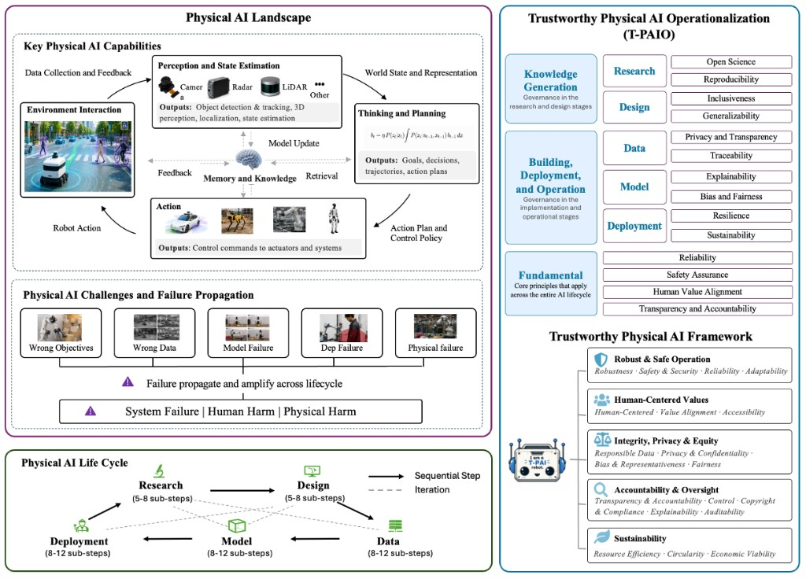
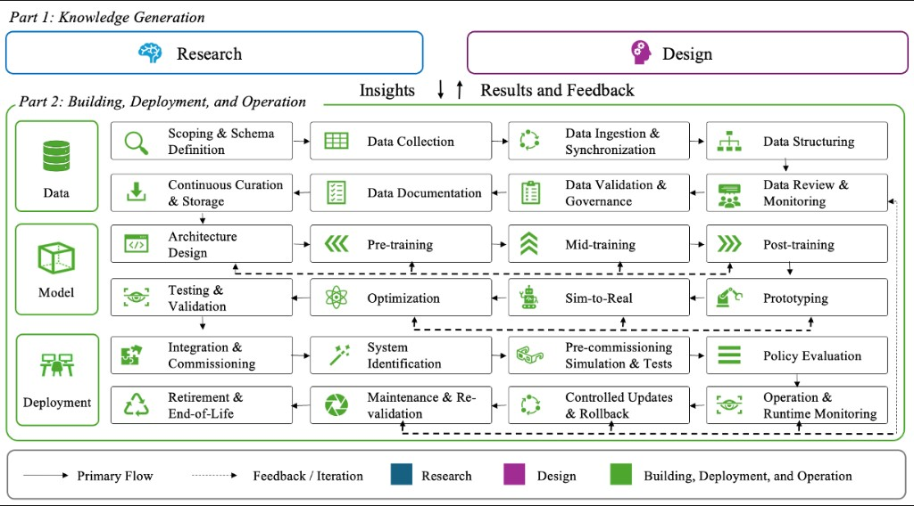

Survey paper
Our work
A 51-page survey of trustworthy Physical AI, from landscape and life cycle to T-PAIO practice and the T-PAI framework. Posted 5 Aug 2026, last revised 20 Aug 2026.
Paper
Physical AI is grounded in perception, reasoning, modeling, prediction, simulation, planning, or embodied interaction. Digital Trustworthy AI checklists miss physical safety, cyber-physical security, and material circularity. This survey characterizes the landscape, walks the end-to-end life cycle, and organizes trustworthiness principles into T-PAI.
Physical AI overview

Life cycle
Five stages of knowledge generation, building, and operation. T-PAIO maps governance onto each stage; T-PAI groups principles into robust operation, human-centered values, integrity and equity, accountability, and sustainability.

How the paper is kept
Updated on the first Monday of each month. Drafts go out the Sunday before. Anyone who contributes in Overleaf is named as an author.
Open items live on the outstanding list. Suggestions: trustworthyphysicalai@gmail.com.